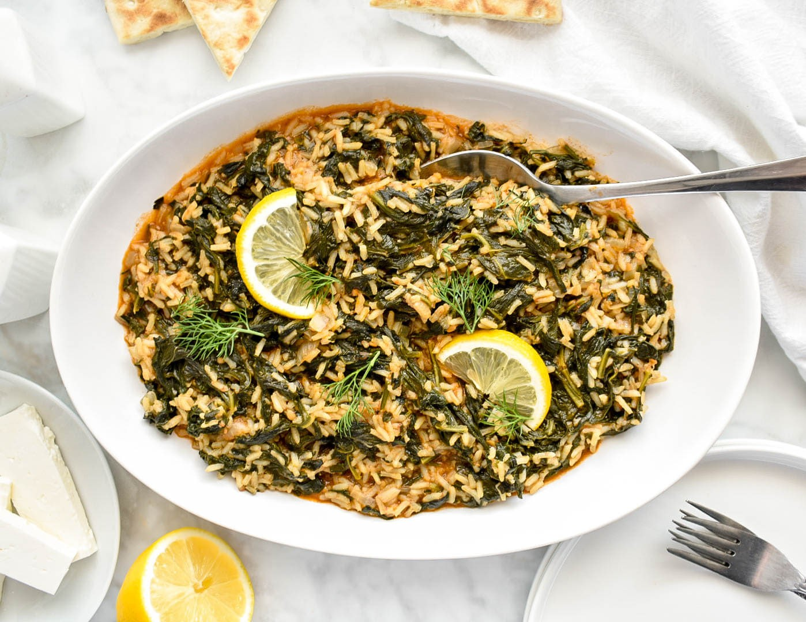

Spinach With Rice
Back Home

Description
Spinach rice with lemon and grains! Easy, fast, economical, healthy and suitable for fasting!
Ingredients
- 1 kg spinach
- 1 cup of Carolina rice
- 1 onion
- 1 clove of garlic
- 1/2 cup of olive oil
- 1/2 cup of lemon juice
- 1/2 cup of dill
- 1/2 cup of parsley
- Salt
- Freshly ground pepper
Steps
- Sauté the ingredients. In a large saucepan, heat half of the total olive oil.
- Sauté the onions, dried onion, and leek for 3-4 minutes until translucent.
- Coarsely chop the spinach and add it to the pot.
- Continue sautéing for 2-3 minutes over high heat until the volume reduces.
- When we see that the spinach has wilted, add the rice and stir until it is well coated.
- Add 1 glass of water (the spinach and vegetables will absorb quite a bit of liquid).
- Add salt and pepper, reduce heat and simmer for 15-20 minutes.
- Add the remaining olive oil at the end of boiling, and sprinkle with the chopped dill.
- Squeeze the lemon and mix.
- Cover the pot with a towel and let it stand for 5-10 minutes to absorb its liquids.